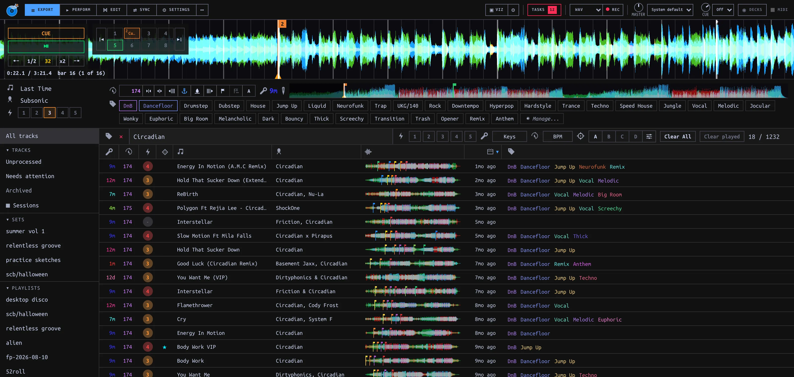
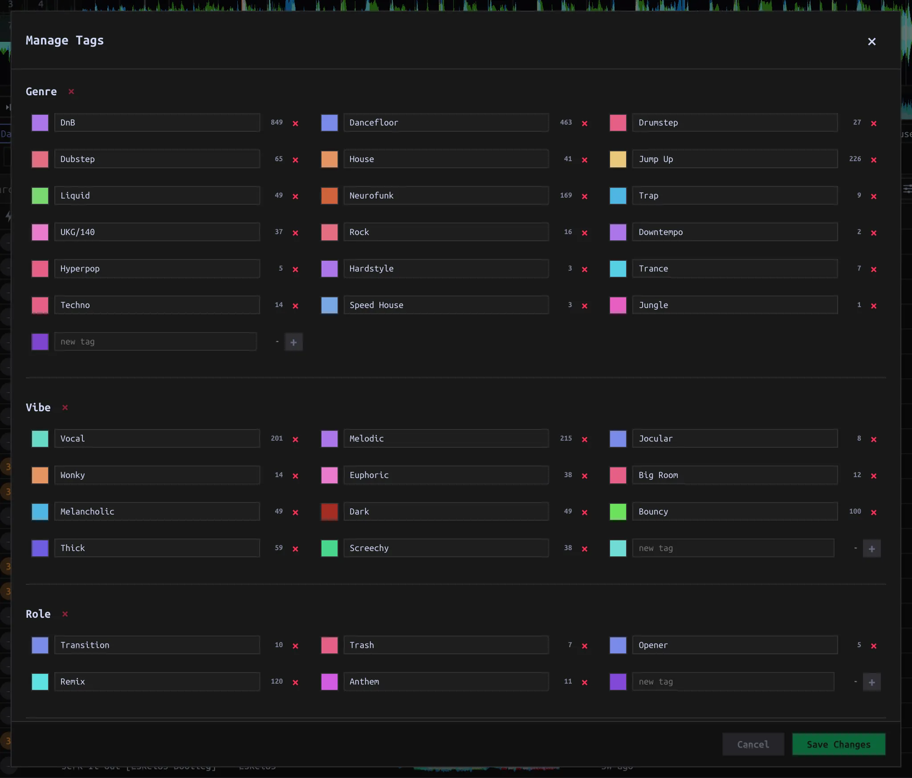
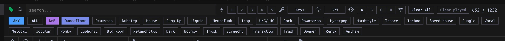

Curate the Library
Import Tracks, assign Tags and Energy, filter, build Playlists, and archive rejects.
On this page

Bring Tracks into the Library
- In the desktop app, drop audio files or a folder onto the Library track table. Drop onto a Playlist in the sidebar to import new files and append them there. Music stays at its existing location; the drop does not make another copy. Already-known paths, including Archived Tracks, are skipped. Dropping a file already in the Library onto a Playlist does not add that existing Track to the Playlist.
- For a recurring music folder, set Settings → Library → Tracks directory and scan it. Sync → Tracks → Unimported files lists files in that directory not yet in the Library: select rows, choose Import N selected, then Apply. This is a different operation from dragging a file into the desktop window. A browser tab cannot supply filesystem paths for drop import; use the desktop app or the configured directory instead.
- For a Rekordbox library, use Sync → Rekordbox import to preview the import before choosing new Tracks or missing details. See first run and Sync.
Imports queue background analysis. TASKS in the top bar shows progress and failed work. A new Track is still a curation task: check its title, artist, Tags and Energy before using it downstream.
Curate a Track
- Open EXPORT from the top bar’s ⋯ menu, or use the Library browse panel in PERFORM. Choose Unprocessed in the sidebar to work through Tracks missing Tags or Energy. This list does not check whether the title and artist have been cleaned up.
- Load the Track onto a Deck (double-click a row or use its Load to Deck A/B control). The upper metadata and Tag panel edits the loaded Track, not merely the highlighted table row. Confirm the title in that panel before changing anything. In standalone Library, Enter loads the selected row on Deck A.
- Correct title/artist and other editable metadata in the loaded-Track panel. Click Tags to assign or unassign them; assignments save immediately. Press T to filter its Tags by name, then Enter to toggle the highlighted Tag. Click Energy 1–5 for intensity; this is a separate Track field, not a Tag. Verify the row’s colored Energy number and Tag pills. Analysis and cues covers BPM, Key, Beatgrid and cue edits.
Tag Categories and colors
Use the loaded-Track panel’s Manage... button to change the vocabulary. Add a named Category (for example Genre, Vibe, or Role), then add Tags inside it. Each Tag belongs to one Category; the names are yours, not fixed genres. Choose a swatch, Randomize, Choose…, or enter a hex color. Tags can have their own colors; otherwise they inherit their Category color. Save Tag edits with Save Changes, or Cancel them. Category creation/deletion takes effect immediately; confirm a deletion only if you intend to remove that Category’s Tags from Tracks. Deleting one Tag likewise removes its assignments. Changing the structure is different from toggling a Tag on the loaded Track.

Find the next curation batch
The filter bar applies the selected axes together. Use Clear All to reset search, Tags, Energy, Key, BPM and Follow; it does not reset a chosen column sort or Follow parameter preferences.

| Control | What to do | What matches |
|---|---|---|
| search… | Type part of a title, artist or filename. Cmd/Ctrl-F focuses it; × clears. | Case-insensitive substring. Search does not inspect Tag names. Enter or Escape in the field returns focus without clearing the query. |
| Tag icon, pills, ANY / ALL | Expand Tags, select two or more, switch mode. | ANY matches at least one selected Tag; ALL requires every selected Tag. With no selected Tags, neither restricts the list. |
| Energy 1–5 | Click one number or drag across a range. | An inclusive range; narrowed ranges exclude Tracks with unset Energy. Full 1–5 does not exclude unset Energy. |
| Keys | Pick one or several keys on the circle; use Clear All in its popup. | Any selected key. A Track without Key does not match an active Key filter. |
| BPM | Set Center BPM and Threshold (±N%); use Clear in its popup. | The center range plus half/double-time equivalents. A Track without BPM does not match an active BPM filter. |
Click a sortable column header to change display order; click again to reverse it. Filters narrow the visible rows, not the underlying Playlist membership. Follow can further narrow the browse list against a loaded Track.
Build a Playlist
- + New… → Playlist in the sidebar; type its name and press Enter. Right-click the Playlist to rename, color, delete, or make a Set from it.
- Select one or several Tracks and drag them onto the Playlist in the sidebar, or use the Track menu’s Add to playlist. Split view places the Playlist above a full-Library pane so you can filter below and drag into the Playlist above. A Track appears only once; adding it again does not move it.
- In the Playlist, sort by # (Play order), clear filters, and drag rows to change the curated order. Sorting by title/BPM/Key changes only the display, not Play order; drops under another sort append. Delete/Backspace or Remove from playlist removes Playlist membership, not the Track from the Library.
Playlist filters are off by default. Use the funnel on that Playlist to apply the shared filter bar; in split view, its filter bar belongs to the lower Library pane. Syncing this curated order to other libraries is a separate Sync operation.
Archive a reject
Right-click a Track, or select several, and choose Archive track(s). Confirm if prompted about removal from Playlists: archiving takes it out of active Library lists and every Playlist. It does not delete the audio file, Track record, or source correspondence. Tracks → Archived shows archived rows; right-click one and Unarchive to return it to active lists. Unarchiving does not restore its former Playlist memberships. A later scan does not re-propose the archived path as a new Track.